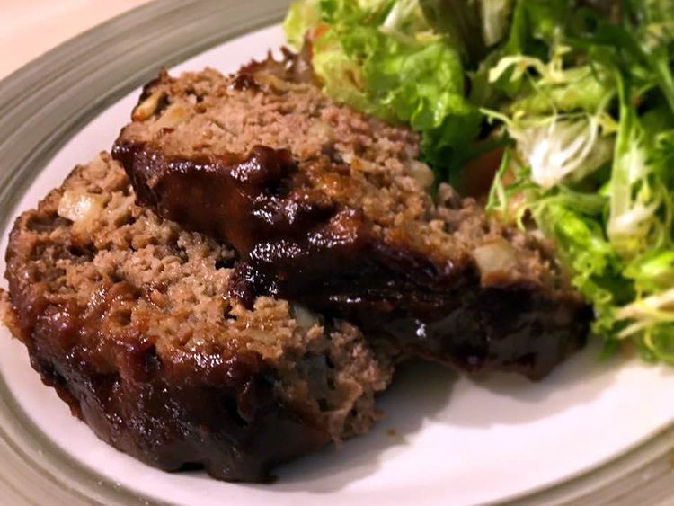

Home
Glazed Meatloaf

Description
This homemade Meatloaf is incredibly juicy, packed with flavour, and topped with a sweet
and tangy glaze that caramelized beautifully. It's the ultimate comfort food - easy to make and satisfying.
Everyone needs a great meatloaf recipe that they can count on, and this one delivers every
time. Follow my tips below for the most flavorful, moist, and teder meatloaf you'll ever make.
Ingredients
- 1/2 cup ketchup
- 1/3 cup brown sugar
- 1/4 cup lemon juice, divided
- 1 teaspoon mustard powder
- 2 pounds ground beef
- 3 slices bread, broken up into small pieces
- 1/4 cup chopped onion
- 1 large egg, beaten
- 1 teaspoon beef bouillon granules
Directions
- Preheat the oven to 350 degrees F(175 degrees C).
- Combine ketchup, brown sugar, 1 tablespoon lemon juice, and mustard powder in a small bowl.
- Combine ground beef, bread, onion, egg, bouillon, and remaining lemon juice in a separate
large bowl. Add in 1/3 of the ketchup mixture from the small bowl. Mix well and place in a 5x9-inch loaf pan.
- Bake in the preheated oven for 1 hour. Drain any excess fat, coat with remaining ketchup mixture,
and bake for 10 more minutes.